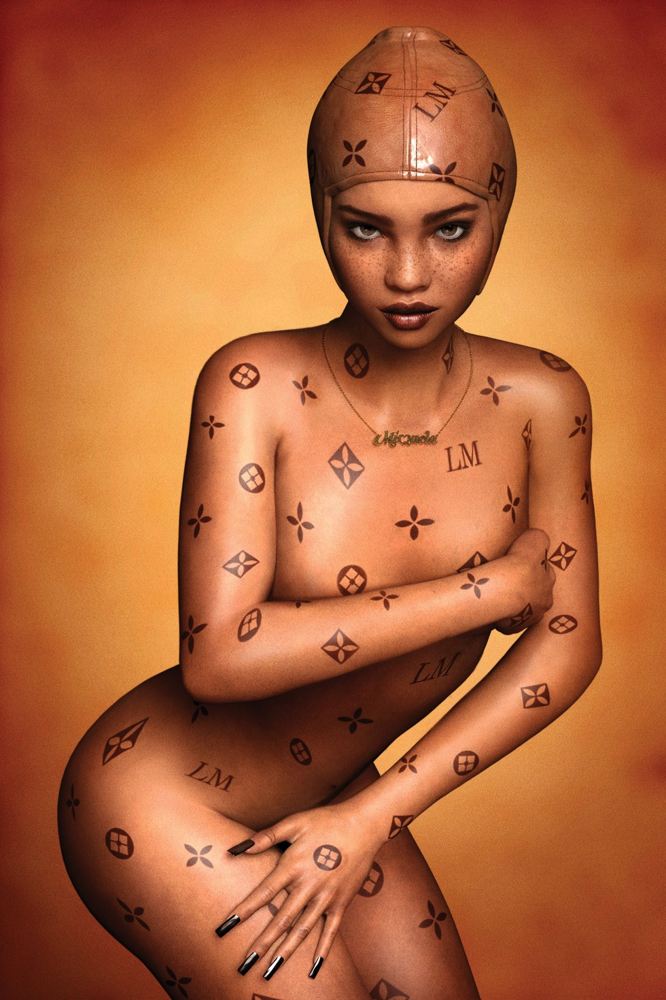

#InternetCulture
Lil Miquela: (Cyber) Girl of the 21st Century
By Alex Weis | 05 December 2017

"I take the typical Instagram model, but twist it and flip it on its head," Lil Miquela says. The singer, model and activist has become one of the most exciting new voices on the feed, attracting nearly half a million followers with selfies, links to her electro-pop songs and confessionals that range from her thoughts on body acceptance to trans rights. She also happens to be an avatar. With uncanny photos of herself posing next to real-life people like Diplo or Samantha Urbani, Miquela raises exciting questions about what it means to be real on the Internet, a topic all the more pertinent in today's environment of fake news, bots and the rise of A.I. And though the Internet is desperate to uncover who's behind the account, it shouldn't really matter, because even if Miquela herself is not "really real," the important conversations she's starting about immigration rights and female representation in fashion sure are. "I want to be able to use social media for good, instead of using it as a way to demean young people," she explains, over email. "I've found so much compassion in my followers, and it's made me feel comfortable opening up and sharing my creativity with them. To me, that's what being real is."
Lil Miquela pays homage to Lil' Kim: Luxury Item (1997), by David LaChapelle for Interview Magazine, with permission from LaChapelle.